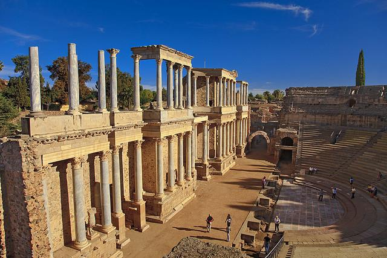
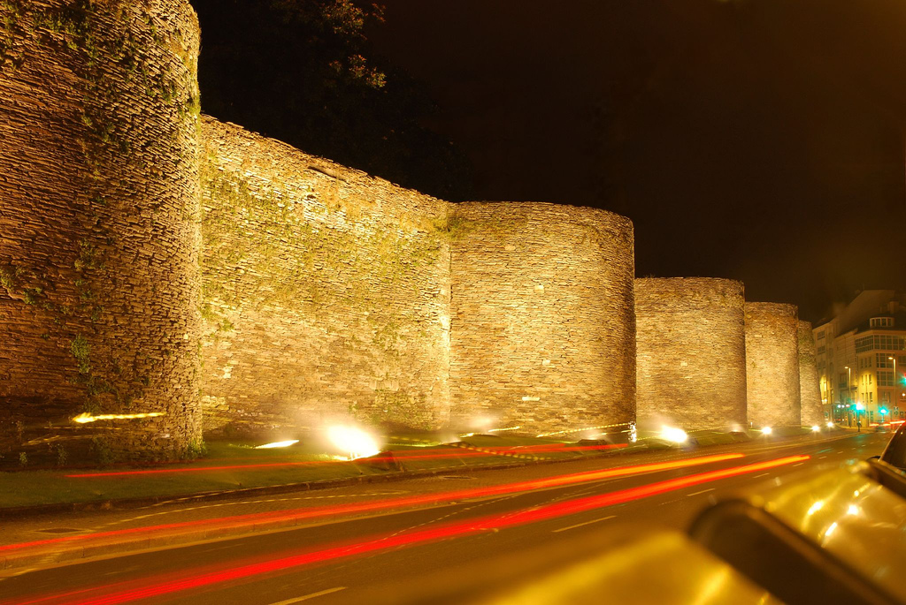
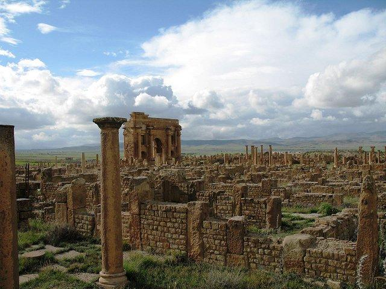
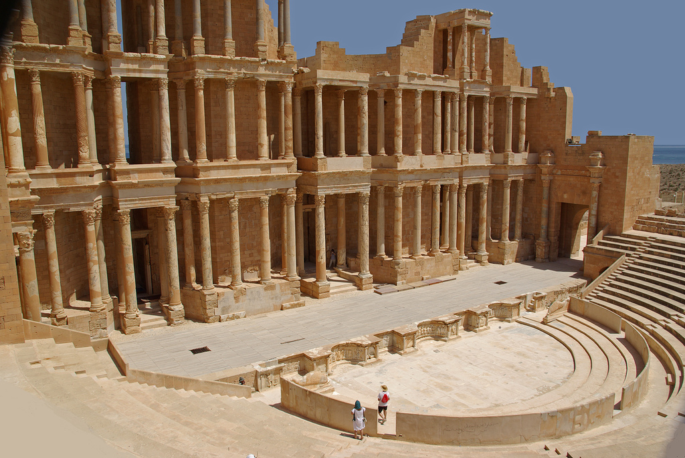

Art & Architecture of Rome
Les Ferreres Aqueduct
Les Ferreres Aqueduct (also known as Pont del Diable meaning Devil’s Bridge) was built to take water from the Francoli water 15 kilometers (9 miles) south to the city of Tarragona. It probably dates from the time of Augustus, the first ruler of the Roman Empire. The aqueduct has a maximum height of 27 meter and a length of 249 meter. It was composed by 25 upper arches and 11 lower arches.

Roman Theatre of Merida
According to an inscription, the Roman Theatre of Merida was built in 16 BC by order of Agrippa, a general and friend of emperor Augustus. The ancient theatre could house up to 6,000 spectators. In later centuries the theater underwent several restorations which introduced new architectonic elements and decorations. The structure was restored to the current state in the 1960s-1970s.

Lugo - The City with Roman Walls
Located in northwestern Spain, Lugo is the only city in Europe to be surrounded by completely intact Roman walls. The walls reach a height of 10 to 15 meters (30-50 feet) along a circuit ringed with 71 towers. The walk along the top is continuous round the circuit, and features ten gates.

Timgad
Timgad was a Roman colonial town in North Africa founded by the Emperor Trajan around 100 AD. At the west end of the town rises a 12 meter (39 feet) high arch, called Trajan’s Arch which was partially restored in 1900. The chief material used in building the arch was sandstone.

Sabratha
Sabratha's was established around 500 BC as a Phoenician trading-post and reched its peak under Roman rules as a coastal outlet for the products of the African hinterland. The Theatre of Sabratha was built in the 2n century AD. The Roman structure appears largely intact owing to its reconstruction by Italian archaeologists in the 1930s. The theatre had 25 entrances and could seat approximately 5,000 spectators.

Temple of Artemis
The city of Ephesus was once famed for the Temple of Artemis, one of the seven wonders of the ancient world, which was destroyed by a mob led by the archbishop of Constantinople in 401 AD. Some of the structures can still be seen however including the Great Theater and the Library of Celsus. The library was built around 125 AD to store 12,000 scrolls and to serve as a monumental tomb for Celsus, the governor of Asia. The façade was carefully reconstructed in the 1970s to its present splendid state from the original pieces.